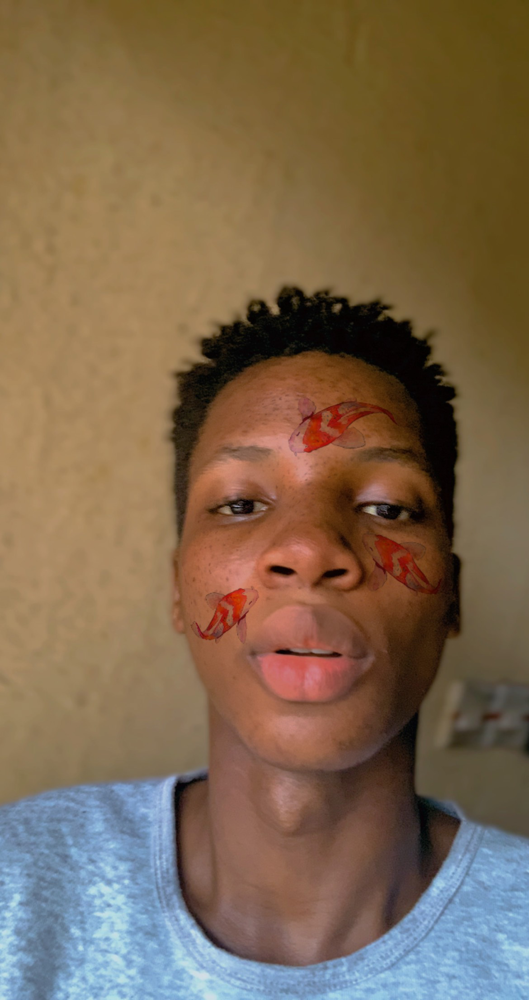

About Me

My name is Chigbu Bryan, and I am passionate about technology, finance, and creativity. I am currently learning web and computer development, focusing on programming languages like C#. In addition to coding, I have an interest in financial markets and entrepreneurship.
In my free time, I enjoy playing video games and reading manga, always looking for new ways to learn and grow.
Nigeria: The Giant of Africa
Nigeria, known as the "Giant of Africa," is the most populous country on the continent, rich in cultural diversity with over 250 ethnic groups and more than 500 languages. It has a strong economy driven by oil, agriculture, and a booming entertainment industry, including Nollywood and Afrobeats.
Despite challenges, Nigeria remains a hub of innovation, resilience, and vibrant traditions.